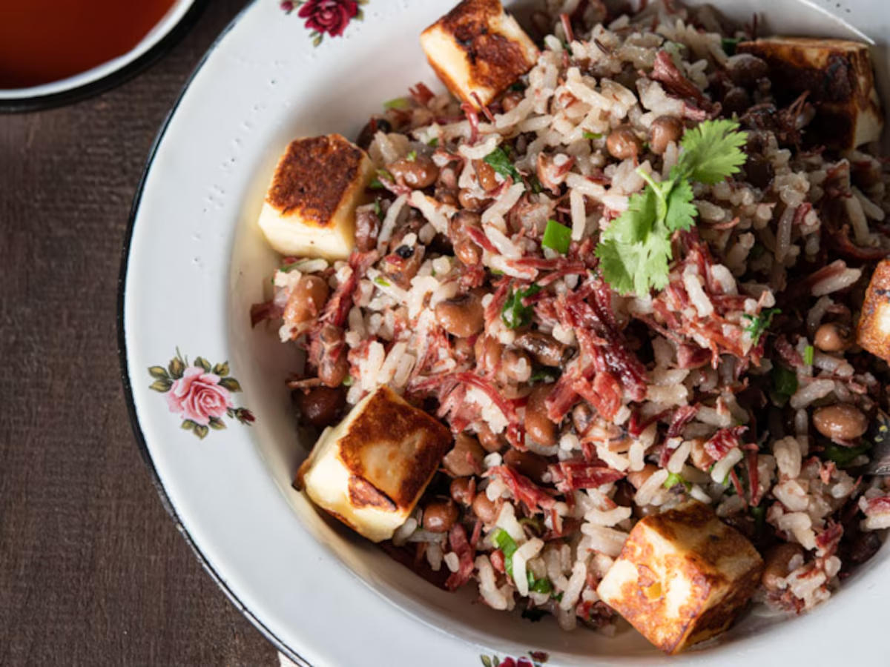

RECEITA DA CASA
01
Baião de Dois
Um clássico cheio de sabor, feito para reunir pessoas ao redor da mesa. Arroz, feijão, queijo e aquele tempero que transforma uma refeição em memória.
Ver receitaReceitas, memórias e sabores que atravessam gerações. Porque cada prato tem uma história esperando para ser contada.
Explorar receitasNa nossa cozinha, cada receita começa com uma lembrança: o almoço de domingo, o cheiro do café passado ou o caderno de receitas da família. Aqui, tradição e criatividade se encontram à mesa.
Escolha um prato, reúna quem você ama e deixe a cozinha contar o resto da história.

RECEITA DA CASAUm clássico cheio de sabor, feito para reunir pessoas ao redor da mesa. Arroz, feijão, queijo e aquele tempero que transforma uma refeição em memória.
Ver receitaTextura macia, aroma de erva-doce e sabor de festa junina em cada fatia.
Uma sopa acolhedora para aquecer noites frias e conversas demoradas.
Leite condensado, coco fresco e uma pausa doce para celebrar o dia.
Nenhuma receita encontrada. Tente outro ingrediente ou prato.
Uma receita é uma história que pode ser compartilhada.— UMA HISTÓRIA À MESA
Temperando Histórias nasceu para celebrar a cozinha afetiva e as pessoas que fazem dela um lugar de encontro.
Mais do que ensinar receitas, queremos preservar os pequenos rituais que dão gosto à vida: cozinhar sem pressa, dividir a mesa e passar adiante o que aprendemos.